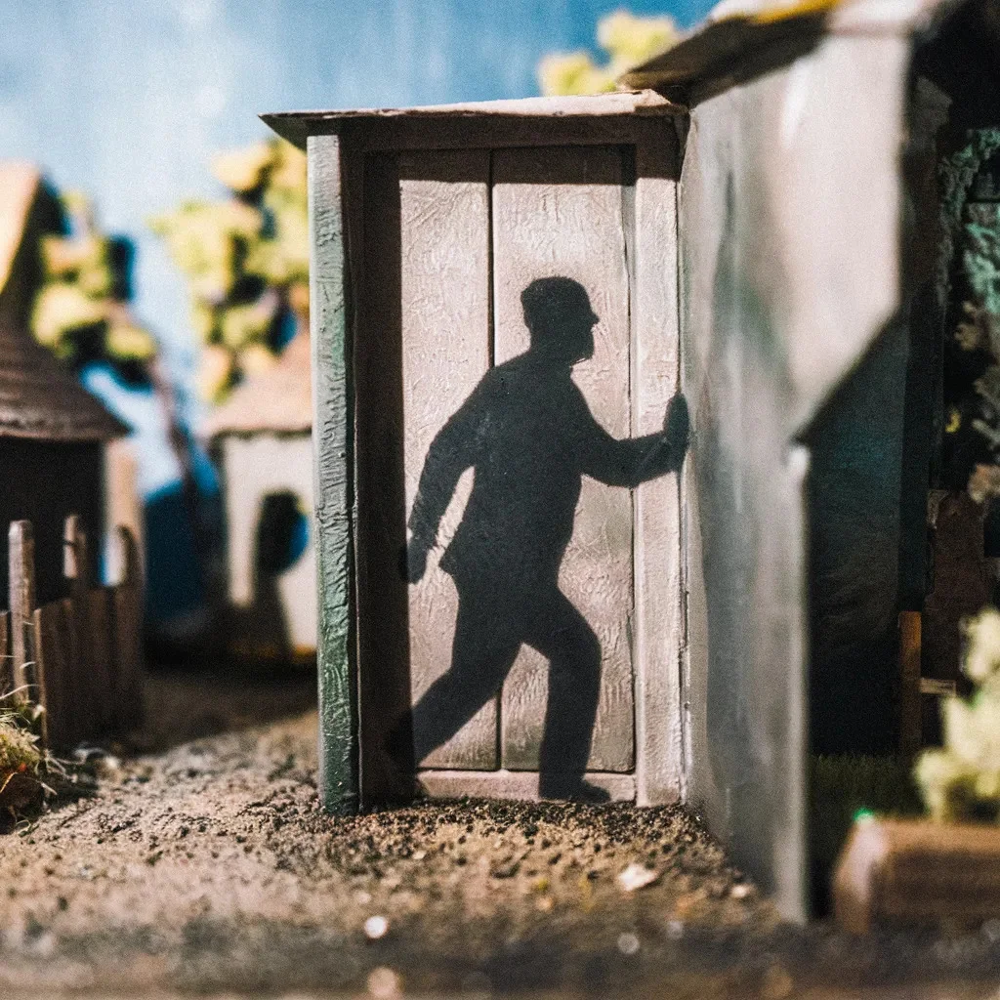

에밀리오 베가는 평범한 어느 화요일 아침에 처음으로 이상한 점을 발견했다. 그는 욕실 거울 앞에 서서 턱에 면도기를 대고 있었을 때 그것을 보았다. 아니, 오히려 보지 못했다. 평소에는 타일 벽에 충실히 비치던 그의 그림자가 사라져 있었다.
[Emilio Vega first noticed the anomaly on a Tuesday morning, as mundane as any other. He stood before the bathroom mirror, razor poised at his chin, when he saw it—or rather, didn’t see it. His shadow, usually a faithful silhouette on the tiled wall, was absent.]
그는 눈을 깜빡이며 돌아보았고, 그의 그림자가 문틀에 기대어 팔짱을 낀 채 건방진 자세로 쉬고 있는 것을 발견했다. 에밀리오는 면도기를 떨어뜨렸다. 면도기는 세면대에 떨어져 거품과 수염으로 도자기를 얼룩지게 했다.
[He blinked, turned, and found it lounging against the doorframe, arms crossed in a posture of insolent repose. Emilio dropped his razor. It clattered in the sink, speckling the porcelain with foam and whiskers.]
“클라라,” 그가 손은 떨리지만 목소리는 침착하게 불렀다. “클라라, 이리 와봐.”
[“Clara,” he called, voice steady despite the tremor in his hands. “Clara, come here.”]
그의 아내가 나타났다. 머리카락은 아직 잠에서 깬 지 얼마 안 된 듯 헝클어져 있었다. “무슨 일이야, 에밀리오?”
[His wife appeared, hair still tousled from sleep. “What is it, Emilio?”]
그는 말없이 자신의 반항적인 그림자를 가리켰다. 클라라의 시선이 그의 손가락을 따라갔다가 다시 그의 얼굴로 돌아왔다. 그녀는 혼란스러워 보였다. “내가 뭘 봐야 하는 거야?”
[He pointed, wordless, at his rogue shadow. Clara’s gaze followed his finger, then returned to his face, puzzled. “What am I looking at?”]
“내 그림자야,” 에밀리오가 말했다. “그게… 움직였어.”
[“My shadow,” Emilio said. “It's… moved.”]
클라라의 눈썹이 찌푸려졌다. “그림자는 있어야 할 자리에 그대로 있는데, 여보. 괜찮아?”
[Clara’s brow furrowed. “It’s right where it should be, darling. Are you feeling all right?”]
에밀리오는 다시 문쪽으로 돌아보았다. 그의 그림자는 정말로 제자리로 돌아와 있었고, 그의 당황한 자세를 완벽하게 따라하고 있었다. 그는 고개를 저으며 이 일을 이른 아침 빛의 장난으로 치부했다.
[Emilio turned back to the doorway. His shadow had indeed returned to its proper place, a perfect mimicry of his bewildered stance. He shook his head, dismissing the incident as a trick of early morning light.]
하지만 그가 서류가방을 들고 출근하려 할 때, 저항하는 듯한 당김을 느꼈다. 아래를 내려다보니 그의 그림자가 현관매트에 단단히 발을 붙이고 마치 문틀을 붙잡는 듯 팔을 뻗어 집을 떠나지 않으려 하고 있었다.
[But as he left for work, briefcase in hand, he felt a tug of resistance. Glancing down, he saw his shadow firmly planted on the welcome mat, arms outstretched as if grasping the doorframe, unwilling to leave the house.]
에밀리오는 고집 센 그림자와의 실랑이로 옷이 구겨진 채 한 시간 늦게 사무실에 도착했다. 그의 동료인 마르코스 푸엔테스가 걱정스러운 눈으로 그를 바라보았다.
[Emilio arrived at his office an hour late, his suit disheveled from the struggle with his recalcitrant shadow. His colleague, Marcos Fuentes, eyed him with concern.]
“힘든 아침이었나 보네, 에밀리오?”
[“Rough morning, Emilio?”]
에밀리오는 설명할 엄두도 내지 못한 채 고개를 끄덕였다. 그는 자신의 책상에 앉으며 아래에 있는 그림자의 뚱한 존재를 예민하게 의식했다. 펜을 집으려 손을 뻗자 그림자의 손이 재빨리 뻗어 나와 필기구를 바닥으로 떨어뜨렸다.
[Emilio nodded, not daring to explain. He settled at his desk, acutely aware of his shadow’s sullen presence beneath him. As he reached for a pen, the shadow’s hand darted out, knocking the writing implement to the floor.]
하루 종일 에밀리오의 그림자는 작은 방식으로 반항했다: 지나가는 사람들을 넘어뜨리고, 서류를 뒤섞고, 한번은 놀랍게도 깜짝 놀란 인턴의 뺨을 쓰다듬기까지 했다. 에밀리오는 얼굴이 부끄러움으로 달아오른 채 계속 사과를 중얼거렸다.
[Throughout the day, Emilio’s shadow rebelled in small ways: tripping passersby, rearranging papers, and once, alarmingly, caressing the cheek of a startled intern. Emilio muttered apologies, his face burning with embarrassment.]
저녁이 되자 그는 완전히 지쳐 있었다. 그는 사무실 화장실 거울 앞에 서서 자신의 모습을 살펴보았다. 그의 그림자는 그의 뒤에 서 있었는데, 더 이상 그의 움직임을 따라 하지 않고 장난스러운 미소를 짓고 있었다.
[By evening, he was exhausted. He stood before the mirror in his office bathroom, studying his reflection. His shadow stood behind him, no longer mimicking his movements but wearing a mischievous grin.]
“넌 뭘 원하는 거야?” 에밀리오가 속삭였다.
[“What do you want?” Emilio whispered.]
그림자의 미소가 더 넓어졌다. 그것은 창문을 가리키더니 에밀리오의 가슴을 가리켰다. 우아한 동작으로 그림자는 에밀리오에게서 분리되어 벽을 따라 미끄러지듯 사라져가는 햇빛 속으로 빠져나갔다.
[The shadow’s grin widened. It pointed to the window, then to Emilio’s heart. With a graceful motion, it separated itself from Emilio, sliding across the wall and out into the fading daylight.]
에밀리오는 갑자기 큰 무게가 덜어진 것 같은 가벼움을 느꼈다. 그는 바닥을 내려다보았다. 그의 그림자가 있어야 할 자리에는 빈 타일만 있을 뿐이었다.
[Emilio felt a sudden lightness, as if a great weight had been lifted. He looked down at the floor. Where his shadow should have been, there was nothing but blank tile.]
그는 건물을 나섰고, 그림자 없는 상태의 감각에 놀라워했다. 지는 해가 하늘을 생생한 색조로 물들이고 있었고, 수년 만에 처음으로 에밀리오는 그 지평선을 따라가고 싶은 충동을 느꼈다.
[He walked out of the building, marveling at the sensation of shadowlessness. The setting sun painted the sky in vibrant hues, and for the first time in years, Emilio felt an urge to follow it to the horizon.]
그가 횡단보도에 서 있을 때, 다른 보행자들이 그를 혼란스러운 눈으로 쳐다보고 있는 것을 알아챘다. 한 아이가 손가락으로 가리키며 엄마에게 왜 저 아저씨에게 그림자가 없는지 물었다.
[As he stood at the crosswalk, he noticed other pedestrians staring at him in confusion. A child pointed, asking her mother why the man had no shadow.]